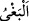

ihdâs etmeyi ve fitneleri kışkırtmayı yasaklar.
“Ve azgınlığı da” zulmü, insanlara tahakküm etmeyi, sebepsiz yere saldırmayı,
ayıplarını araştırmayı, gıybetlerini yapmayı, onları ayıplamayı, hakkı terk edip bâtıla
sapmayı ve benzerlerini de “yasaklar.”
et-Te’vîlâtü’n-Necmiyye’de der ki: “
(azgınlık)” nefsin taşkınlık sıfatlarının
feveran ederek elinden, dilinden insanların eza ve cefa görmesidir.
Riyâzat kuvvetiyle nefsin kanatları kırılır ki böylece sülûk istikâmet bulur. Çünkü
hadiste geçen “En büyük düşmanın iki yanın arasındaki nefsindir”[191] hükmünce en
kötü düşman nefistir.
Bu şom ve kötü işli nefis köpeği
Ki daima senin kucağındadır
Bu çok kötü köpek senin canını kastetmektedir
Senin kemiklerinin iliğini yemektedir
Eğer o seni bağlarsa çabuk bağlar
Sen o nefsi sağlam bağla ki düşmanındır
Letâifü’t-takrîr’de bu âyetin tefsîrinde rivâyet olunur ki: Mülkün istikâmeti üç şey ile
olur. Yine mülkün zarar görmesi, o üç şeyi ondan alıkoymakla olur. Onların her biri bir
semere/meyve gibidir. Adâletin semeresi yardım, ihsanın semeresi senâ ve medih, sıla-i
rahmin semeresi ünsiyet ve ülfettir. Çirkin işlerin semeresi dînin fesâda uğraması,
fenalığın semeresi düşmanları tahrik ve azgınlığın sonucu temenni ettiği şeyden mahrum
kalmaktır.
“O,” Allah Teâlâ “düşünüp tutasınız” belki emirleri yapıp yasaklardan kaçınarak
öğüt alırsınız “diye size öğüt veriyor.” yâni bu iyi şeyleri emredip kötülükleri size
yasaklıyor.
Allah Teâlâ, bu âyette üç şeyi emretmiş ve üç şeyi de yasaklamıştır. Öncekilerin ve
sonrakilerin ilimlerini, iyi ve kötü bütün huyları bu üç şeyde toplamıştır. Bundan dolayı
İbn Mes’ud (r.a.) der ki: Bu hayır ve şer konusunda Kur’an’ın en câmi/toplu âyetidir.
Bu yüzden her hatib, minberde her hutbenin sonunda, her emredilen ve nehyedileni içine
alan bir öğüt olması için bu âyeti okur. Nitekim Medârik’te böyle geçmektedir. Ali
(r.a.)’a lânet edenlerin lânet ifâdeleri hutbelerden kaldırılınca onun yerine bu âyet ikâme
edilmiştir. Nitekim Bahru’l-ulûm’da böyle geçmektedir.
İmam Suyutî, Kitabu’l-Vesâil ilâ ma‘rifeti’l-evâil adlı kitabında ilk defa hutbe
sonunda “Muhakkak ki Allah, adâleti, iyiliği, akrabaya yardım etmeyi emreder…”
âyetini okuyanın Ömer b. Abdülaziz olduğunu söyler. Asrımıza kadar hatipler de buna
devam edegelmişlerdir. Ömer b. Abdulaziz 99 hicri yılında halîfe olmuştur. Hilâfet
müddeti iki sene beş aydır. O, icma ile ilk yüzyılın müceddidi sayılmıştır.
Rasûlullah (s.a.) hutbede (yâni sonunda) Kâf sûresini okurdu.[192] Ömer b. Hattab